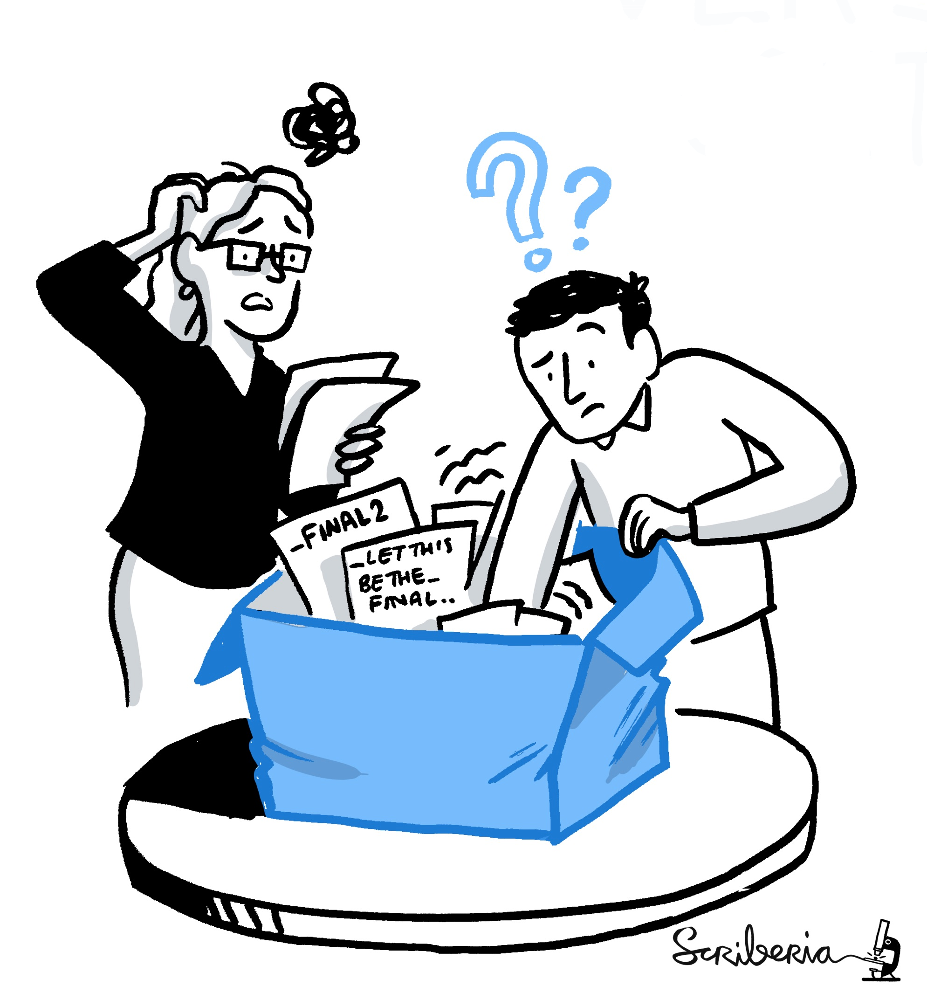
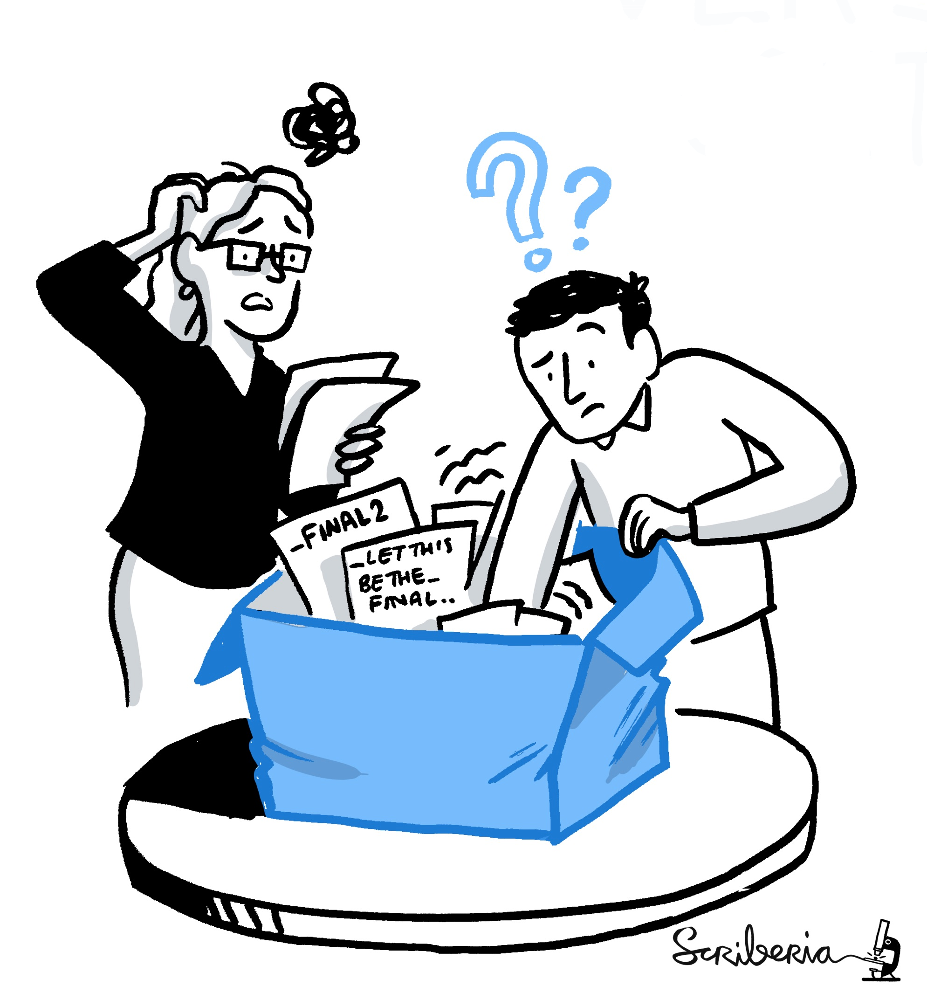
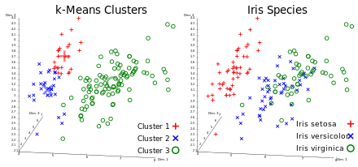
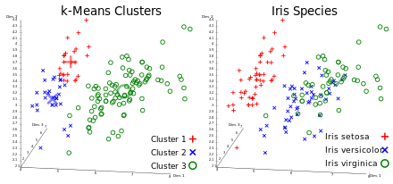

Brainhack Global 2020 Ankara
ü߆üíª
An introduction to DataLad
Adina Wagner
 @AdinaKrik
@AdinaKrik |
|
|
Psychoinformatics lab,
Institute of Neuroscience and Medicine, Brain & Behavior (INM-7) Research Center Jülich ReproNim/INCF fellow |
some  Basics
Basics
- A command-line tool, available for all major operating systems (Linux, macOS/OSX, Windows), MIT-licensed
- Build on top of Git and Git-annex
- Allows...
- ... version-controlling arbitrarily large content
- version control data and software alongside to code!
- ... transport mechanisms for sharing and obtaining data
- consume and collaborate on data (analyses) like software
- ... (computationally) reproducible data analysis
- Track and share provenance of all digital objects
- ... and much more
- Completely domain-agnostic
A few things that DataLad can help with
- Getting data
- Keeping a project clean and orderly
- Computationally reproducible data analysis
Acknowledgements
|
Funders


Collaborators
|
Everything happens in DataLad datasets
- DataLad's core data structure
- Dataset = A directory managed by DataLad
- A Git/git-annex repository
- Any directory of your computer can be managed by DataLad.
- Datasets can be created (from scratch) or installed


File viewer and terminal view of a DataLad dataset

Using DataLad
- DataLad can be used from the command line
- ... or with its Python API
- ... and other programming languages can use it via system call
datalad create mydatasetimport datalad.api as dl
dl.create(path="mydataset")# in R
> system("datalad create mydataset")
Getting data
- Datasets can be used to distribute data
-
You can
clonea dataset from a public or private place and get access to the data it tracks

- Datasets are light-weight: Upon installation, only small files and meta data about file availability are retrieved, but no file content.

$ datalad clone git@github.com:psychoinformatics-de/studyforrest-data-phase2.git
install(ok): /tmp/studyforrest-data-phase2 (dataset)
$ cd studyforrest-data-phase2 && du -sh
18M . # its tiny!Getting data
- A cloned dataset gets you access to plenty of data, but has only little disk-usage
- Specific file contents can be retrieved on demand via
datalad get:
$ datalad get sub-01/ses-movie/func/sub-01_ses-movie_task-movie_run-1_bold.nii.gz
get(ok): /tmp/studyforrest-data-phase2/sub-01/ses-movie/func/sub-01_ses-movie_task-movie_run-1_bold.nii.gz (file) [from mddatasrc...]- You can also drop file content if you don't need it anymore with
datalad drop:
$ datalad drop sub-01/ses-movie/func/sub-01_ses-movie_task-movie_run-1_bold.nii.gz
drop(ok): /tmp/studyforrest-data-phase2/sub-01/ses-movie/func/sub-01_ses-movie_task-movie_run-1_bold.nii.gz (file) [checking https://arxiv.org/pdf/0904.3664v1.pdf...]# eNKI dataset (1.5TB, 34k files):
$ du -sh
1.5G .
# HCP dataset (80TB, 15 million files)
$ du -sh
48G .
Getting data
- You can get more than 200TB of public data with DataLad, for example...
- All OpenNeuro datasets:
github.com/OpenNeuroDatasets
$ datalad clone https://github.com/OpenNeuroDatasets/ds003171.git - The human connectome project data (full, and in subsets):
github.com/datalad-datasets/human-connectome-project-openaccess
$ datalad clone https://github.com/datalad-datasets/human-connectome-project-openaccess.git -
ABIDE (I-II), INDI, ADH200, CORR, Healthy Brain Network SSI, and many more in
the DataLad superdataset (datasets.datalad.org)
$ datalad clone ///
Keeping a project clean and orderly

⬆
This a metaphor for most projects after publication
Keeping a project clean and orderly
- Much of neuroscientific research is computationally intensive, with complex workflows from raw data to result, and plenty of researchers degrees of freedom

Complex analysis ➝ chaotic projects
"Shit, which version of which script produced these outputs from which version of what data?" 


Keeping a project clean and orderly

|
|

|
|
Keeping a project clean and orderly
First, let's create a new data analysis dataset withdatalad create
$ datalad create -c yoda myanalysis
[INFO ] Creating a new annex repo at /tmp/myanalysis
[INFO ] Scanning for unlocked files (this may take some time)
[INFO ] Running procedure cfg_yoda
[INFO ] == Command start (output follows) =====
[INFO ] == Command exit (modification check follows) =====
create(ok): /tmp/myanalysis (dataset) -c yoda applies useful pre-structuring and configurations:$ tree
.
├── CHANGELOG.md
├── code
│   └── README.md
└── README.md
Version Control
- DataLad knows two things: Datasets and files

datalad save Version control
# create a data analysis script
$ datalad status
untracked: code/script.py (file)
$ git status
On branch master
Untracked files:
(use "git add file..." to include in what will be committed)
code/script.py
nothing added to commit but untracked files present (use "git add" to track)
Version control
# create a data analysis script
$ datalad status
untracked: code/script.py (file)
$ git status
On branch master
Untracked files:
(use "git add file..." to include in what will be committed)
code/script.py
nothing added to commit but untracked files present (use "git add" to track)
Version control
# create a data analysis script
$ datalad status
untracked: code/script.py (file)
$ git status
On branch master
Untracked files:
(use "git add file..." to include in what will be committed)
code/script.py
nothing added to commit but untracked files present (use "git add" to track)
$ datalad save -m "Add a k-nearest-neighbour clustering analysis" code/script.py 
Version controlling data allows to track data changes and uniquely identify precise versions that were used in your analysis
Local version control
Procedurally, version control is easy with DataLad!

- Non-complex DataLad core API (easier than Git)
- Pure Git or git-annex commands (for regular Git or git-annex users, or to use specific functionality)
Stay flexible:
- Save meaningful units of change
- Attach helpful commit messages
Intuitive data analysis structure

$ cd myanalysis
# we can install analysis input data as a subdataset to the dataset
$ datalad clone -d . https://github.com/datalad-handbook/iris_data.git input/
[INFO ] Scanning for unlocked files (this may take some time)
[INFO ] Remote origin not usable by git-annex; setting annex-ignore
install(ok): input (dataset)
add(ok): input (file)
add(ok): .gitmodules (file)
save(ok): . (dataset)
action summary:
add (ok: 2)
install (ok: 1)
save (ok: 1)
Intuitive data analysis structure
$ tree
.
├── CHANGELOG.md
├── code
│   ├── README.md
│   └── script.py
└── input
  └── iris.csvBasic organizational principles for datasets
- Keep everything clean and modular
 |
|
- do not touch/modify raw data: save any results/computations outside of input datasets
- Keep a superdataset self-contained: Scripts reference subdatasets or files with relative paths
Computationally reproducible data analysis
This a metaphor for reproducing (your own) research
a few months after publication
⬇
 Write-up:
handbook.datalad.org/en/latest/basics/101-130-yodaproject.html
Write-up:
handbook.datalad.org/en/latest/basics/101-130-yodaproject.html
A classification analysis on the iris flower dataset
 
Write-up:
handbook.datalad.org/en/latest/basics/101-130-yodaproject.html

Write-up:
handbook.datalad.org/en/latest/basics/101-130-yodaproject.html
Reproducible execution & provenance capture
datalad run

Computational reproducibility
How can I execute the analysis script on my input data in a computationally reproducible manner?$ datalad run -m "analyze iris data with classification analysis" \
--input "input/iris.csv" \
--output "prediction_report.csv" \
--output "pairwise_relationships.png" \
"python3 code/script.py"
[INFO ] Making sure inputs are available (this may take some time)
get(ok): input/iris.csv (file) [from web...]
[INFO ] == Command start (output follows) =====
[INFO ] == Command exit (modification check follows) =====
add(ok): pairwise_relationships.png (file)
add(ok): prediction_report.csv (file)
save(ok): . (dataset)
action summary:
add (ok: 2)
get (notneeded: 2, ok: 1)
save (notneeded: 1, ok: 1)
Computational reproducibility
How can I execute the analysis script on my input data in a computationally reproducible manner?$ datalad run -m "analyze iris data with classification analysis" \
--input "input/iris.csv" \
--output "prediction_report.csv" \
--output "pairwise_relationships.png" \
"python3 code/script.py"
[INFO ] Making sure inputs are available (this may take some time)
get(ok): input/iris.csv (file) [from web...]
[INFO ] == Command start (output follows) =====
[INFO ] == Command exit (modification check follows) =====
add(ok): pairwise_relationships.png (file)
add(ok): prediction_report.csv (file)
save(ok): . (dataset)
action summary:
add (ok: 2)
get (notneeded: 2, ok: 1)
save (notneeded: 1, ok: 1)
Computational reproducibility
$ git log
commit df2dae9b5af184a0c463708acf8356b877c511a8 (HEAD -> master)
Author: Adina Wagner adina.wagner@t-online.de
Date: Tue Dec 1 11:58:18 2020 +0100
[DATALAD RUNCMD] analyze iris data with classification analysis
=== Do not change lines below ===
{
"chain": [],
"cmd": "python3 code/script.py",
"dsid": "9ffdbfcd-f4af-429a-b64a-0c81b48b7f62",
"exit": 0,
"extra_inputs": [],
"inputs": [
"input/iris.csv"
],
"outputs": [
"prediction_report.csv",
"pairwise_relationships.png"
],
"pwd": "."
}
^^^ Do not change lines above ^^^
Computational reproducibility
$ git log
commit df2dae9b5af184a0c463708acf8356b877c511a8 (HEAD -> master)
Author: Adina Wagner adina.wagner@t-online.de
Date: Tue Dec 1 11:58:18 2020 +0100
[DATALAD RUNCMD] analyze iris data with classification analysis
[...]
rerun this hash to repeat the
analysis:
$ datalad rerun df2dae9b5af1
datalad rerun df2dae9b5af18
[INFO ] run commit df2dae9; (analyze iris data...)
[INFO ] Making sure inputs are available (this may take some time)
unlock(ok): pairwise_relationships.png (file)
unlock(ok): prediction_report.csv (file)
[INFO ] == Command start (output follows) =====
[INFO ] == Command exit (modification check follows) =====
add(ok): pairwise_relationships.png (file)
add(ok): prediction_report.csv (file)
action summary:
add (ok: 2)
get (notneeded: 3)
save (notneeded: 2)
unlock (ok: 2)
Computational reproducibility
- Code may fail (to reproduce) if run with different software
- Datasets can store (and share) software environments (Docker or Singularity containers) and reproducibly execute code inside of the software container, capturing software as additional provenance
- DataLad extension:
datalad-container
datalad-containers run

Computational reproducibility
$ datalad containers-add software --url shub://adswa/resources:2
[INFO ] Initiating special remote datalad
add(ok): .datalad/config (file)
save(ok): . (dataset)
containers_add(ok): /tmp/myanalysis/.datalad/environments/software/image (file)
action summary:
add (ok: 1)
containers_add (ok: 1)
save (ok: 1)
Computational reproducibility
datalad containers-run will execute the command in the specified
software environment$ datalad containers-run -m "rerun analysis in container" \
--container-name midterm-software \
--input "input/iris.csv" \
--output "prediction_report.csv" \
--output "pairwise_relationships.png" \
"python3 code/script.py"
[INFO] Making sure inputs are available (this may take some time)
[INFO] == Command start (output follows) =====
[INFO] == Command exit (modification check follows) =====
unlock(ok): pairwise_relationships.png (file)
unlock(ok): prediction_report.csv (file)
add(ok): pairwise_relationships.png (file)
add(ok): prediction_report.csv (file)
save(ok): . (dataset)
action summary:
add (ok: 2)
get (notneeded: 4)
save (notneeded: 1, ok: 1)
unlock (ok: 2)datalad rerun will repeat the analysis in the
specified software environmentA quick summary of this sneak peek
- Getting data
- You can retrieve DataLad datasets with "datalad clone url/path"
- A dataset allows you to retrieve data on demand via "datalad get"
- You can drop unused data to free up disk space with "datalad drop"
- Keeping projects clean
- Create a dataset for data analysis using "datalad create -c yoda mydatasetname"
- In this dataset, DataLad can version control data of any size with "datalad save"
- You can link individual datasets as reusable and intuitive modular components, for example your input data to your analysis, with "datalad clone -d . url"
- Computational reproducibility
- "datalad run" can create a digital, machine-readable, and re-executable record of how you did your data analysis
- You or others can redo the analysis automatically with "datalad rerun"
- You can even link software environments to your analysis with the "datalad-container" extension, and run analysis with "datalad containers-run"
Is there more?
Resources and Further Reading
|
Comprehensive user documentation in the DataLad Handbook (handbook.datalad.org) |
|
 |
|
 |
|
 |
|